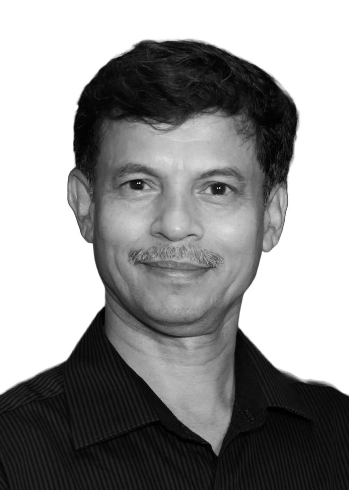
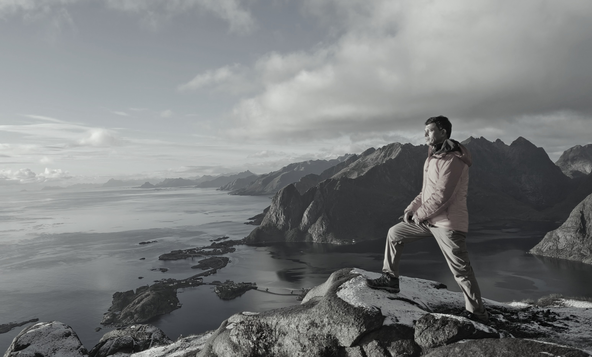

Imprint
Placeholder — add Sanjay Patil's registered business name, address and contact details here.
Sanjay Patil Mumbai-based photographer working across wildlife, landscape, festival and portrait light

01 Philosophy
Sanjay Patil is a Mumbai-based photographer whose journey is rooted in one fundamental belief — light is everything.
Engineering taught him to understand how things work. Photography taught him to understand how things feel. Together, the two have shaped a distinctive vision, where science provides the understanding and light provides the language.
For Sanjay, photography begins not with the camera, but with light. He looks at how light shapes a subject, creates mood, reveals texture, defines form — and transforms an ordinary moment into an extraordinary photograph.
Whether photographing wildlife, landscapes, festivals, or people, his approach is guided by a constant search for the quality, direction, colour, and emotion of light.
02 Photography
Sanjay's travels and photographic explorations across India and around the world have shaped how he sees, and how he searches for a frame.
Each journey has further strengthened his understanding of natural light and its ability to tell stories, whether on a wildlife trail at first light, a landscape at dusk, or a festival lit by colour and celebration.
Across every genre, the instinct stays the same: watch how the light moves, wait for the moment it says something, and be ready when it does.

03 Teaching
Over the years, Sanjay has contributed as a teacher and mentor to many, helping them find their own way behind the camera.
His teaching goes beyond cameras and technique. It is about learning to see light, understanding composition, and building the instincts for visual storytelling.
More than anything, he encourages every student to develop a photographic vision that is their own.
04 Legacy
Sanjay's knowledge of the printing process, colour management, papers, and archival techniques allows him to take a photograph further, turning it into an enduring physical expression of an artist's vision.
For him, a photograph on a screen is only half the journey.
The journey is complete only when the light captured in a moment becomes an image that can endure for generations.